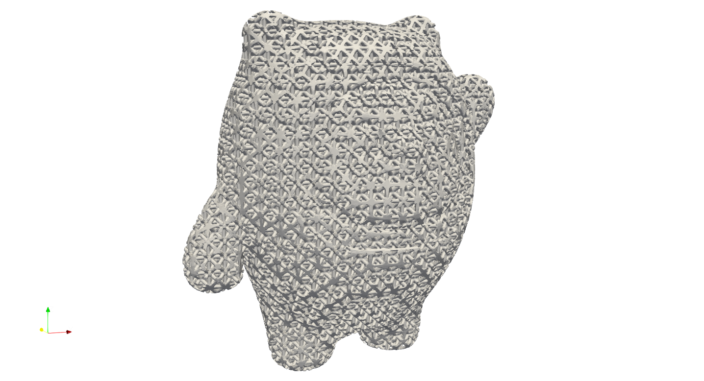
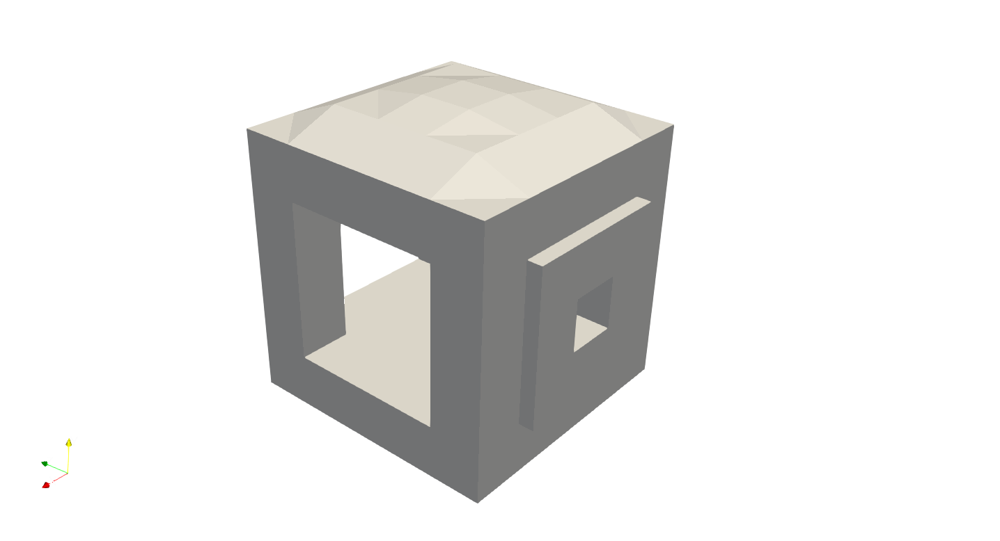
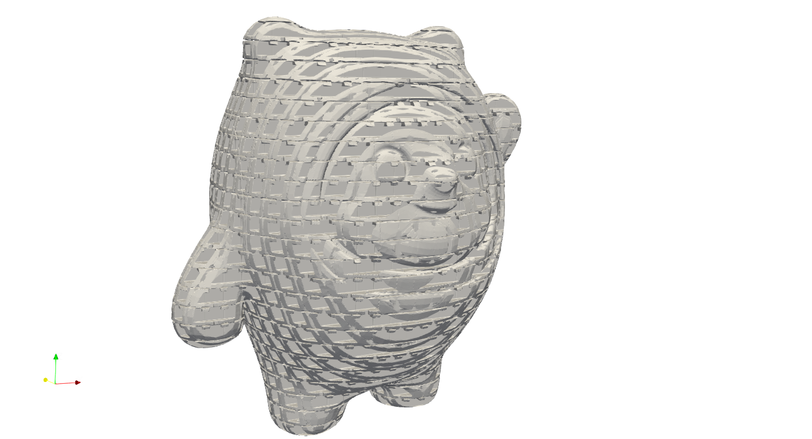
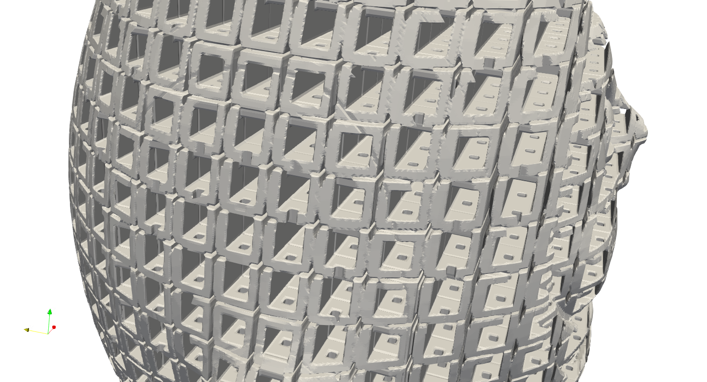

Customization#
Artisan integrates a number of lattice design, including:
Strut Lattice |
TPMS Lattice |
Strut Lattice Tetrahedron domain |
|---|---|---|
Cubic, BCCubic, VertexOcta, BC, FCCubic, EdgeOcta, StarTet, Dodecahedron, Auxetic |
SchwarzDiamond, SchwarzPrimitive, FischerKoch, Neovius, Lidinoid, Gyroid |
Rhombic, Star, Icosahedral, Voronoi, Kagome, Tetrahedron |
We plan to expand the list mentioned above in future developments. Strut and TPMS lattices are generally used in hexahedral domains, which have 6 faces and 8 nodes, such as a cube. Strut lattices in tetrahedral domains are primarily utilized in the generation of conformal lattices when tetrahedral meshes are provided. It’s important to note that Artisan does not check the lattice domain types during the filling process, but be aware that using mismatched lattice types can lead to unexpected results. Lattices in tetrahedral domains will be discussed in a later section.
We understand that this might not satisfy all users’ requirements at certain stages. Artisan is capable of incorporating users’ lattice definitions into the design. Users can define a lattice in three different ways:
Strut lattice, i.e. topological connections;
Surface lattice, i.e. mathematical/implicit equations such as TPMS;
Geometric shape, i.e. a file contains geometry mesh.
In practice, users only need to set the la_name parameter in all keywords to the file containing the definitions. Please note that this file must have a .txt extension. Artisan automatically detects the customized definition and interprets its content. The definition file contains a JSON structure that specifies the type of customized lattice and how it is defined.
We have presented a few examples with the Add_Lattice keyword. Users can extend this feature to the Lin_Interpolate, HS_Interpolate, and Attractor keywords.
Strut Lattice#
Defining a strut lattice requires the nodal coordinates, and topological conductivities, e.g. connection between two nodes. We use a simple geometry fill to demonstrate this functionality. Below is main example JSON which calls the user defined lattice.
{"Setup":{ "Type" : "Geometry",
"Geomfile": ".//sample-obj//shell_1_of_bdd_.stl",
"Rot" : [0.0,0.0,0.0],
"res":[0.5,0.5,0.5],
"Padding": 1,
"onGPU": false,
"memorylimit": 16106127360
},
"WorkFlow":{
"1": {"Add_Lattice":{
"la_name": ".//Test_json//CustomLattice_Strut.txt", "size": [8.0,8.0,8.0], "thk":1.2, "Rot":[0.0, 0.0, 0.0], "Trans":[0.0, 0.0, 0.0],
"Inv": false, "Fill": true, "Cube_Request": {}
}
},
"2":{"Export": {"outfile": ".//Test_results/BingDunDun_Infill_CustomStrut.stl"}}
},
"PostProcess":{"CombineMeshes": true,
"RemovePartitionMeshFile": false,
"RemoveIsolatedParts": true,
"ExportLazPts": false}
}
The parameter la_name in the keywords Add_Lattice became a file path that links to the custom strut lattice definition. The definition in the file is showed below. In this case, we defines the strut lattice type, and nodes coordinates and the conductivities. Note that the node coordinates shall define with from 0 to 1 mm in x, y and z direction. The parameter "ladomain" defines the lattice in a hexahedron lattice domain, i.e. "Hex", a domain defined by 6 faces and 8 nodes.
{
"type": "strut",
"definition": {
"pts":
[[1.0, 1.0, 0.0],
[1.0, 1.0, 1.0],
[0.0, 1.0, 1.0],
[0.0, 1.0, 0.0],
[0.0, 0.0, 0.0],
[0.0, 0.0, 1.0],
[1.0, 0.0, 1.0],
[1.0, 0.0, 0.0]],
"cnnt":[[0, 1],[0, 3],
[3, 2],[2, 1],
[1, 6],[0, 7],
[3, 4],[2, 5],
[7, 4],[7, 6],
[6, 5],[4, 5],
[0, 5],[1, 4],
[2, 7],[3, 6]],
"ladomain" : "Hex"
}
}
Above example shall produce the filled results like below. Yes, it is filled by the BCCubic lattice. User may try different nodes locations and/or conductivities.
Surface Lattice#
User may define a surface through its implicit equation, and apply the thickness to the surface as a lattice unit. We can use a different user defined surface lattice.
{
"type": "TPMS",
"definition": {
"unit_x_len": "2*pi",
"unit_y_len": "2*pi",
"unit_z_len": "2*pi",
"expr": "cos(x)+cos(y)+cos(z)",
"ladomain" : "Hex"}
}
In this definition, we defined an implicit equation
We also need to tells Artisan the single unit length of the given euqation, here it is 2*pi meaning \(2\pi\) . Artisan uses numexpr package to interpret the mathematical equations and inputs. User may refer to the documentation for referencing the acceptable math symbols and equations.
Github: pydata/numexpr
Documentation: https://numexpr.readthedocs.io/en/latest/user_guide.html
We can then have a TPMS style infill. Please note that, the size and thk in the keywords Add_Lattice will automatically define the unit lattice size and thicks the surface with correct thickness.
Geometry Lattice#
Artisan also supports user defined geometry infill. It meant the infill can be a geometry shape that made from other software. For example, we would like to put the following geometric shape as infill.
To fill the geometry with this shape, we could define it like below.
{
"type": "Geom",
"definition": {
"file": ".//sample-obj//boxframe.obj",
"ladomain" : "Hex"
}
}
We could have following results.
More details here.
The thickness of the geometric shape lattice is adjustable through defining the parameter thk. The initial inputs will be considered as 0.0, the negative value of thk shrinks the shape, whereas the positive value expands the lattice unit. The thickness of the given shape has different definition in conformal lattice, please refer to conformal lattice section for more details.
One need clarify that above example "type":"Geom" defines a closed, water tight and solid body mesh geometry. Artisan also supports the single surface mesh defined geometry by change the parameter "type" to "Geom-Plate". For instance, we have the following single surface mesh.
By change the custom lattice definition, we should have the following results. Please note that the thickness of lattice is defined by the calling keyword parameter Thk.
{
"type": "Geom-Plate",
"definition": {
"file": ".//sample-obj//SuperCross.stl",
"ladomain" : "Hex"
}
}